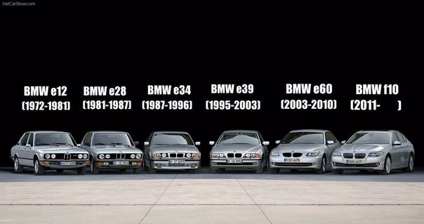

| The BMW 5 Series is a executive car manufactured by BMW since 1972. It is the successor to the New Class Sedans and is currently in its seventh generation. Initially, the 5 Series was only available in a sedan body style. The wagon/estate body style (called "Touring") was added in 1991 and the 5-door fastback (called "Gran Turismo") was produced from 2009 to 2017. The first generation of 5 Series was powered by naturally aspirated inline-4 and straight-6 petrol engines. Following generations have been powered by inline-4, straight-6, V8 and V10 engines with both natural aspiration and turbocharging. Since 1982, diesel engines have been included in the 5 Series range. The 5 Series is BMW's second best-selling model after the 3 Series.[1] On January 29, 2008, the 5 millionth 5 Series was manufactured, a 530d Saloon in Carbon Black Metallic.[2] BMW's three-digit model naming convention began with the first 5 Series.[3] Since the E28, all generations of 5 Series have included an M version, called the BMW M5. |  |